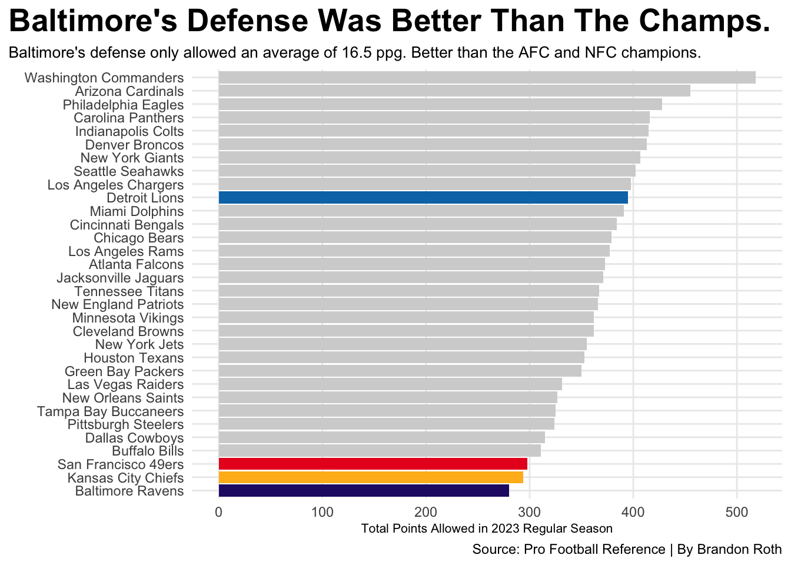
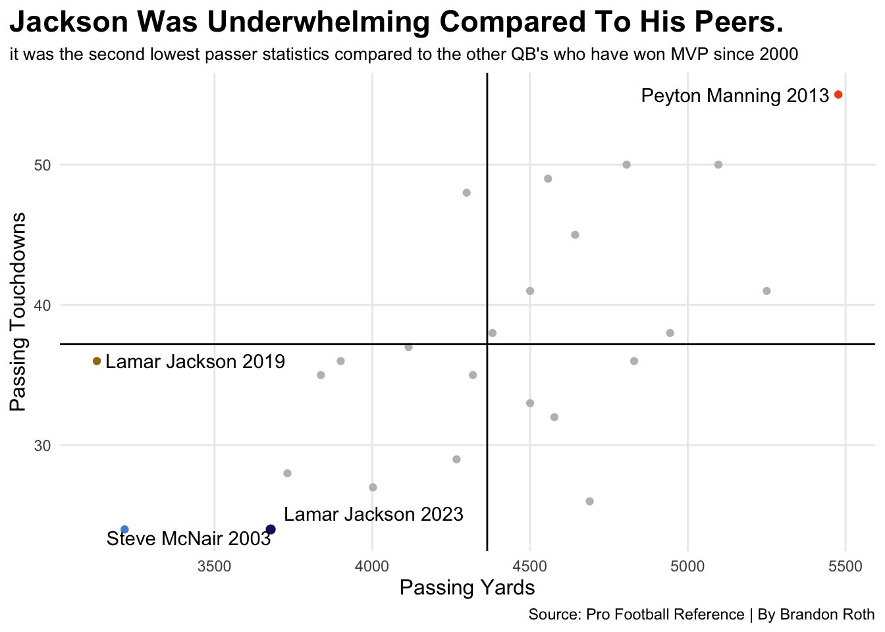

Does Lamar Jackson’s 2023 MVP Cement MVP As A ‘Popular QB’ Award?
Football
Quarterback
MVP Award
Author
Brandon Roth
Published
April 14, 2025
The Baltimore Ravens had a lot to be proud of in the 2023 NFL season. They went 13-4 finishing with the best record in the NFL while Lamar Jackson took home his second MVP in what was a successful season for the Flock.
On the surface, it looks like a well deserved award. The QB of the best team in the NFL leads his team to another year of soaring heights… but what if you knew 2023’s MVP only led in one single player statistic?
To start off: Lamar Jackson’s strengths. Jackson has been an excellent rusher since he was drafted and 2023 was no different. He led the league in QB rushing yards and the only QB to come close was former Bears QB Justin Fields.
Where this gets interesting is rushing touchdowns. Jackson was blown out of the water in this category. Tying at 5 total with QB’s such as Sam Howell and Desmond Ridder, while Josh Allen and Jalen Hurts tied for 15 rushing touchdowns. While one could argue that it’s due to Buffalo’s stellar red zone run game and Philly’s infamous “Tush Push,” at the end of the day, scoring drives are crucial to winning football games.
Code
qbstats |>arrange(desc(Touchdowns)) |>ungroup() |>gt()|>cols_label(Touchdowns ="Touchdowns",Interceptions ="Interceptions" )|>tab_header(title ="The MVP Surely Finished High In Touchdowns... Right?",subtitle ="Lamar Jackson finished his 2023 campaign behind 10 other QB's in passing TDs" )|>tab_style(style =cell_text(color ="black", weight ="bold", align ="left"),locations =cells_title("title") ) |>tab_style(style =cell_text(color ="black", align ="left"),locations =cells_title("subtitle") )|>tab_source_note(source_note =md("**By:** Brandon Roth | **Source:** Pro Football Reference") )|>tab_style(locations =cells_column_labels(columns =everything()),style =list(cell_borders(sides ="bottom", weight =px(3)),cell_text(weight ="bold", size=12) ) ) |>opt_row_striping() |>opt_table_lines("none")|>tab_style(style =list(cell_fill(color ="#241773"),cell_text(color ="white") ),locations =cells_body(rows = Player =="Lamar Jackson") )
The MVP Surely Finished High In Touchdowns... Right?
Lamar Jackson finished his 2023 campaign behind 10 other QB's in passing TDs
Team
Player
Touchdowns
Interceptions
DAL
Dak Prescott
36
9
GNB
Jordan Love
32
11
SFO
Brock Purdy
31
11
DET
Jared Goff
30
12
BUF
Josh Allen
29
18
MIA
Tua Tagovailoa
29
14
TAM
Baker Mayfield
28
10
KAN
Patrick Mahomes
27
14
DEN
Russell Wilson
26
8
NOR
Derek Carr
25
8
BAL
Lamar Jackson
24
7
LAR
Matthew Stafford
24
11
HOU
C.J. Stroud
23
5
PHI
Jalen Hurts
23
15
WAS
Sam Howell
21
21
JAX
Trevor Lawrence
21
14
SEA
Geno Smith
20
9
CAR
Bryce Young
11
10
By: Brandon Roth | Source: Pro Football Reference
As a Passer, Jackson’s season was middle of the road in terms of touchdowns thrown. Just 24 touchdowns in 16 games started. While 10 other QBs threw more than him.
Code
passingyards |>arrange(desc(PassingYards)) |>ungroup() |>gt()|>cols_label(PassingYards ="" )|>tab_header(title ="Jackson's Passing Yards Were Near Worst In The League As A Starter",subtitle ="Below are passing yards of QB's who Started at least 15 games in 2023" )|>tab_style(style =cell_text(color ="black", weight ="bold", align ="left"),locations =cells_title("title") ) |>tab_style(style =cell_text(color ="black", align ="left"),locations =cells_title("subtitle") )|>tab_source_note(source_note =md("**By:** Brandon Roth | **Source:** Pro Football Reference") )|>tab_style(locations =cells_column_labels(columns =everything()),style =list(cell_borders(sides ="bottom", weight =px(3)),cell_text(weight ="bold", size=12) ) ) |>opt_row_striping() |>opt_table_lines("none")|>tab_style(style =list(cell_fill(color ="#241773"),cell_text(color ="white") ),locations =cells_body(rows = Player =="Lamar Jackson") )
Jackson's Passing Yards Were Near Worst In The League As A Starter
Below are passing yards of QB's who Started at least 15 games in 2023
Team
Player
MIA
Tua Tagovailoa
4624
DET
Jared Goff
4575
DAL
Dak Prescott
4516
BUF
Josh Allen
4306
SFO
Brock Purdy
4280
KAN
Patrick Mahomes
4183
GNB
Jordan Love
4159
TAM
Baker Mayfield
4044
JAX
Trevor Lawrence
4016
WAS
Sam Howell
3946
NOR
Derek Carr
3878
PHI
Jalen Hurts
3858
BAL
Lamar Jackson
3678
CAR
Bryce Young
2877
By: Brandon Roth | Source: Pro Football Reference
This is where the cracks really start to show. Out of every QB who started at least 15 games, Jackson finished second to last in passing yards thrown, only surpassing Bryce Young of the 2-15 Carolina Panthers.
Code
ggplot() +geom_bar(data=specific, aes(x=reorder(Team, PA), weight=PA), fill ="lightgrey") +geom_bar(data=ravens, aes(x=reorder(Team, PA), weight=PA), fill="#241773") +geom_bar(data=niners, aes(x=reorder(Team, PA), weight=PA), fill="#E91E22") +geom_bar(data=chiefs, aes(x=reorder(Team, PA), weight=PA), fill="#FFB81C")+geom_bar(data=lions, aes(x=reorder(Team, PA), weight=PA), fill="#0076B6")+coord_flip() +theme_minimal() +labs(x=" ", y="Total Points Allowed in 2023 Regular Season", title="Baltimore's Defense Was Better Than The Champs.", subtitle="Baltimore's defense only allowed an average of 16.5 ppg. Better than the AFC and NFC champions.", caption="Source: Pro Football Reference | By Brandon Roth" ) +theme_minimal() +theme(plot.title =element_text(size =20, face ="bold"),axis.title =element_text(size =8), plot.subtitle =element_text(size=10), panel.grid.minor =element_blank(),plot.title.position ="plot" )

So if this is the case, if Jackson’s yards and touchdowns are nothing to write home about… How did Baltimore win 13 games and earn themselves a first round bye? It’s simple. The Ravens’ defense was an elite unit who finished first in the league in points allowed.
Only allowing 280 points in 17 games– a league best. This defense statistically was better in that regard than the NFC Champion San Francisco 49ers, and the AFC and Super Bowl Champion Kansas City Chiefs, who both finished right behind Baltimore in points allowed. Interestingly enough, Detroit, who lost to the 49ers in the NFC Championship, had a significantly worse defense statistically.
Code
ggplot() +geom_point(data=mvpstats, aes(x=PassingYds, y=TD), color="grey") +geom_point(data=lamar, aes(x=PassingYds, y=TD), color="#241773", size=2) +geom_vline(xintercept =4364.208) +geom_hline(yintercept =37.20833, label="Average MVP Stats") +geom_point(data=peyton, aes(x=PassingYds, y=TD),color="#FB4F14") +geom_point(data=mcnair, aes(x=PassingYds, y=TD),color="#4B92DB")+geom_point(data=lamarfirst, aes(x=PassingYds, y=TD),color="#9E7C0C")+geom_text_repel(data=qblabels, aes(x=PassingYds, y=TD, label= PlayerSeason)) +labs(x="Passing Yards", y="Passing Touchdowns", title="Jackson Was Underwhelming Compared To His Peers.", subtitle="it was the second lowest passer statistics compared to the other QB's who have won MVP since 2000", caption="Source: Pro Football Reference | By Brandon Roth" ) +theme_minimal() +theme(plot.title =element_text(size =17, face ="bold"),axis.title =element_text(size =12), plot.subtitle =element_text(size=10), panel.grid.minor =element_blank(),plot.title.position ="plot" )

The average MVP passing season is around 37 touchdowns and 4300 yards. While examining the other quarterbacks who have won MVP since 2000, Lamar Jackson had the second worst MVP passing season, only passing 2003 Steve McNair, who shared the award with Colts QB Peyton Manning.
So… Why did Jackson win this award? Does being the QB of the team with the best record automatically get you the award?
Former MVP’s statistically were better than Jackson was. So that argument was taken with a grain of salt, but with situations like this, it’s easy to understand the frustration of fans. If Cooper Kupp, who won the triple crown in 2021 and Tyreek Hill, who nearly broke 2,000 yards in the 2023 season, and 2024 Saquon Barkley who rushed for over 2,000 yards all STILL lose… it’s easy to understand how one can come to that conclusion.
Even with the 2024 NFL season. The Kansas City Chiefs were 15-2 and Patrick Mahomes was in the MVP conversation despite being middle of the road in most statistics. It seemed like it would be more of the same old noise…
However, last season the status quo changed. Voters couldn’t make Mahomes winning it make sense because he was not near the best QB, while ironically Lamar Jackson boasted some of the best stats in the NFL and Saquon Barkley nearly broke the single season rushing record while leading the Eagles to a 14-3 record– All lost to Buffalo Bills QB Josh Allen, who was one of the league’s best QBs on the second best team in the AFC.
It seems times are changing in the NFL as this is the first season since 2020 that the award has gone to somebody who is not on the best team, but in the last 10 seasons (2015-2024) 70% of MVPs have, all were quarterbacks.